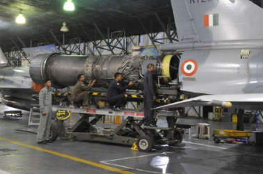
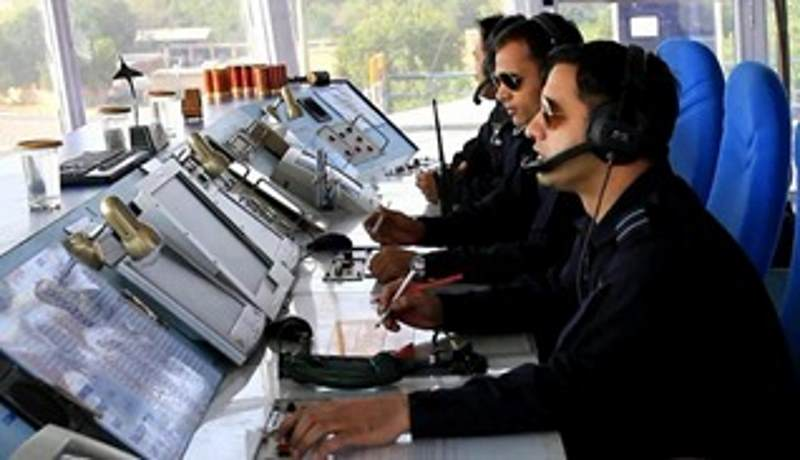
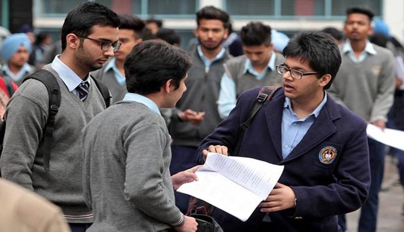

Indian Air Force

INDIAN AIR FORCE

Life in Air Force
As an Officer, a warrior, in the Air Force, you’re tasked with upholding the constitution and protecting India’s freedom. The responsibility is huge, but its not only about work its also about living well.

Selection
Explore selection process to be an Indian Air Force Officer. Selection depends on how you perform in written tests, interviews, medical fitness test and All India merit list.

Motto Of IAF
The Motto of Indian Air Force (Touch the sky with Glory) has been taken from eleventh chapter of the Gita, the Discourse given by Lord Krishna to Arjuna on the battlefield of Kurukshetra during the Great War of Mahabharata.

Carreer
An officer is a member of an armed force or uniformed service who holds a position of authority. To be able to lead and control, requires the ability to motivate yourself, inspire others and make tough decisions efficiently.
EXPLORE CAREER
Working in the Indian Air Force makes you strong enough and teaches you not to substitute words for actions, not to seek the path of comfort, but to face the stress and spur of difficulty and challenge, to learn to stand up in the storm. It gives you a temper of the will, a quality of the imagination, a vigour of the emotions, a predominance of courage and an appetite for adventure over the love of ease.
Face The challenge...be the Airwarrior
CAREER AS PER BRANCHES

Flying Branch
Fly high by joining the flying branch of the IAF. You will be trained as a Fighter Pilot or a Helicopter Pilot or a Transport Pilot and are part of various peace and war time missions.

Ground Duty-Technical
As an officer in the Ground Duty (Technical) Branch, you propel and manage your team to ensure that the Indian Air Force remains airworthy. You would be in charge of some of the most sophisticated equipment in the world by joining one of the sub branches based on your qualification.

Ground Duties
Managing human and material resources, the Ground Duty (Non-technical) Branch is the mechanism that steers the Indian Air Force.
Flying Branch
Fly high by joining the flying branch of the IAF. You will be trained as a Fighter Pilot or a Helicopter Pilot or a Transport Pilot and are part of various peace and war time missions.
Ground Duty-Technical
As an officer in the Ground Duty (Technical) Branch, you propel and manage your team to ensure that the Indian Air Force remains airworthy. You would be in charge of some of the most sophisticated equipment in the world by joining one of the sub branches based on your qualification.
Ground Duties
Managing human and material resources, the Ground Duty (Non-technical) Branch is the mechanism that steers the Indian Air Force.
CAREER AS PER Qualification

10+2
The valiant boys could be part of the Indian Air Force family by applying for NDA( National Defence Academy)

GRADUATE
As a graduate, you can fly into a challenging and rewarding career in the Air Force by applying for the suitable branch. Depending upon your educational qualification, you could apply for different branches.
POST GRADUATE
As a Post Graduate you can join as an Officer in Education and Meteorology branch.
10+2
The valiant boys could be part of the Indian Air Force family by applying for NDA( National Defence Academy)
GRADUATE
As a graduate, you can fly into a challenging and rewarding career in the Air Force by applying for the suitable branch. Depending upon your educational qualification, you could apply for different branches.
POST GRADUATE
As a Post Graduate you can join as an Officer in Education and Meteorology branch.
About AFCAT
For queries regarding AFCAT application, admit card and AFCAT centre, contact – AFCAT Cell
Tele: 020 - 25503105 / 106
Tele Timings: Monday to Friday
9:30 am - 1 pm & 2 pm - 5:00 pm
Popular link
As a graduate, you can fly into a challenging and rewarding career in the Air Force by applying for the suitable branch. Depending upon your educational qualification, you could apply for different branches.